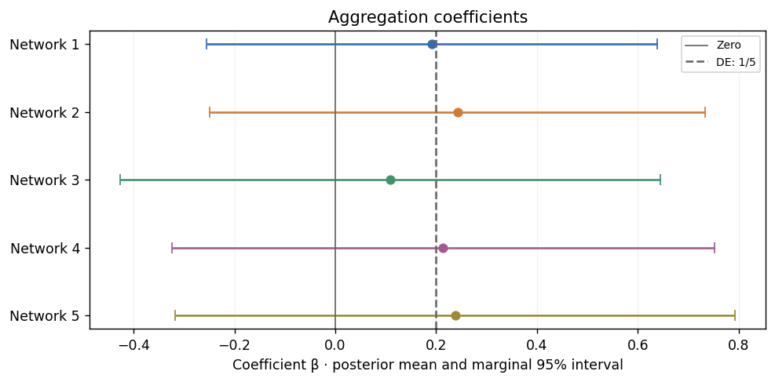
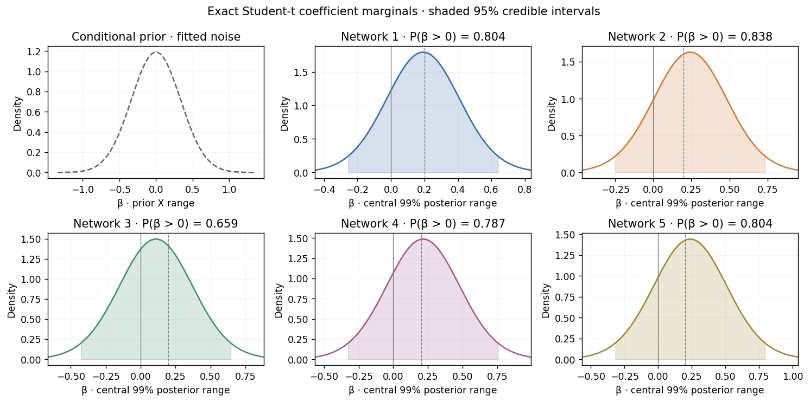
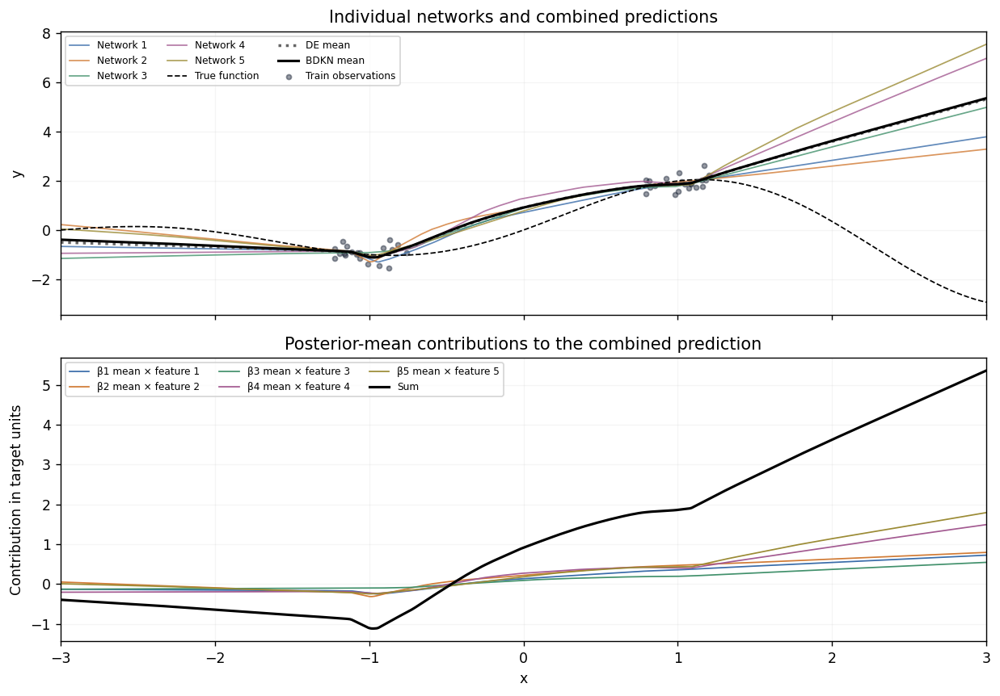
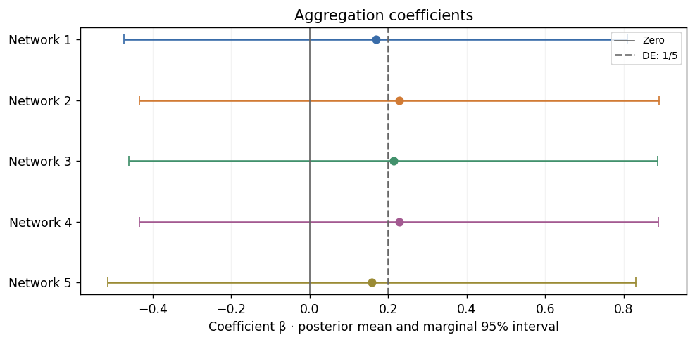
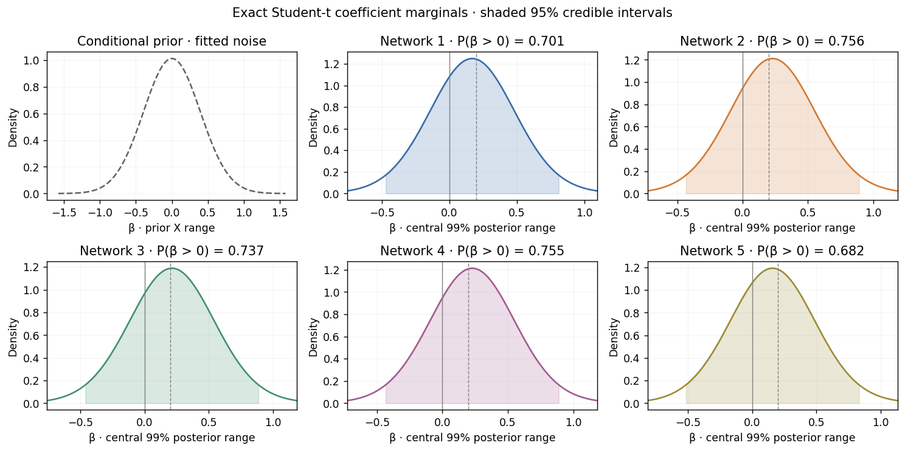
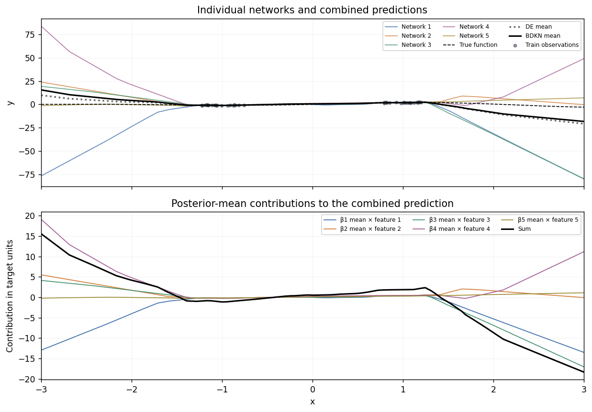
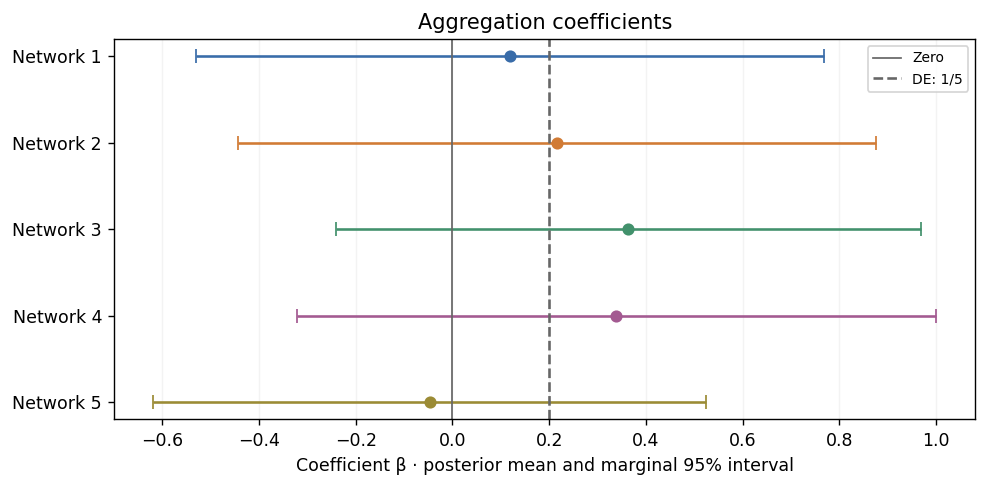
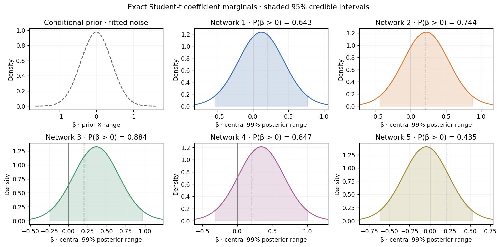
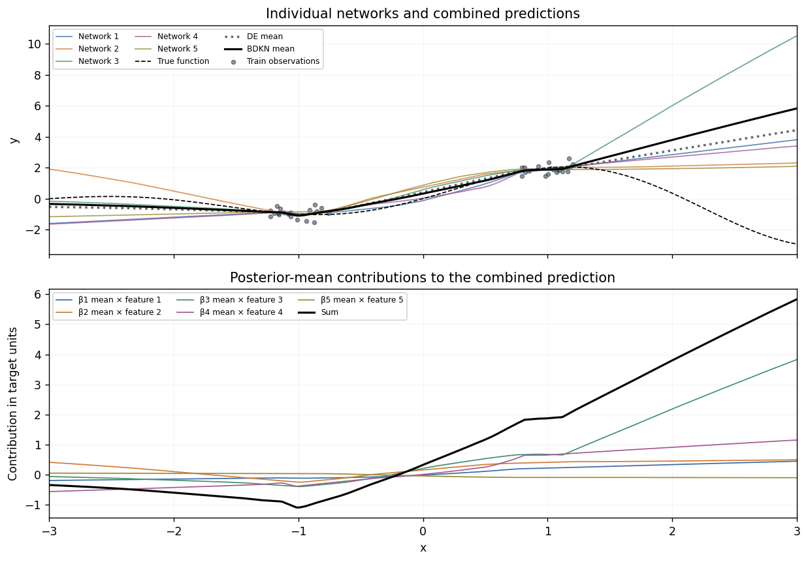

Regression comparison
Download resultsAggregation weights
Coefficients can be negative and need not sum to one. Intervals describe coefficient uncertainty; the dashed reference is DE’s fixed 1/H weight.
BDKN


Each density panel uses its own X range for readability; coefficient intervals above share a common axis. Prior reference conditions on fitted noise. Contribution shares use held-out inputs; test targets are used only for scoring.
| Network | β mean | 95% low | 95% high | P(β > 0) | Contribution share | Test RMSE | Test NLL |
|---|---|---|---|---|---|---|---|
| 1 | 0.21696 | -0.49120 | 0.92513 | 0.73035 | 0.17700 | 2.18420 | 209.95203 |
| 2 | 0.08393 | -0.61020 | 0.77806 | 0.59590 | 0.06140 | 2.03148 | 169.38755 |
| 3 | 0.20692 | -0.48031 | 0.89416 | 0.72686 | 0.23265 | 3.31554 | 985.68460 |
| 4 | 0.27844 | -0.40889 | 0.96578 | 0.79111 | 0.30558 | 3.01797 | 517.36540 |
| 5 | 0.21214 | -0.48923 | 0.91351 | 0.72777 | 0.22337 | 3.07438 | 730.92977 |
Functional repulsion · BDKN



Each density panel uses its own X range for readability; coefficient intervals above share a common axis. Prior reference conditions on fitted noise. Contribution shares use held-out inputs; test targets are used only for scoring.
| Network | β mean | 95% low | 95% high | P(β > 0) | Contribution share | Test RMSE | Test NLL |
|---|---|---|---|---|---|---|---|
| 1 | 0.19168 | -0.25515 | 0.63852 | 0.80444 | 0.16456 | 2.17935 | 242.88274 |
| 2 | 0.24224 | -0.24871 | 0.73319 | 0.83767 | 0.18542 | 2.01782 | 71.41930 |
| 3 | 0.10971 | -0.42609 | 0.64551 | 0.65940 | 0.11047 | 2.58874 | 736.91137 |
| 4 | 0.21403 | -0.32441 | 0.75246 | 0.78675 | 0.26192 | 3.26216 | 788.42874 |
| 5 | 0.23765 | -0.31788 | 0.79319 | 0.80380 | 0.27763 | 3.43908 | 1308.27782 |
Weight repulsion · BDKN



Each density panel uses its own X range for readability; coefficient intervals above share a common axis. Prior reference conditions on fitted noise. Contribution shares use held-out inputs; test targets are used only for scoring.
| Network | β mean | 95% low | 95% high | P(β > 0) | Contribution share | Test RMSE | Test NLL |
|---|---|---|---|---|---|---|---|
| 1 | 0.16859 | -0.47255 | 0.80974 | 0.70098 | 0.31443 | 31.95763 | 39.48295 |
| 2 | 0.22891 | -0.43284 | 0.89067 | 0.75574 | 0.09565 | 7.19729 | 4543.29025 |
| 3 | 0.21317 | -0.46073 | 0.88707 | 0.73687 | 0.28522 | 25.10431 | 8174211.87721 |
| 4 | 0.22751 | -0.43274 | 0.88777 | 0.75491 | 0.27594 | 23.93913 | 14.30436 |
| 5 | 0.15871 | -0.51347 | 0.83090 | 0.68209 | 0.02877 | 3.17889 | 971681.62267 |
First-order repulsion · BDKN



Each density panel uses its own X range for readability; coefficient intervals above share a common axis. Prior reference conditions on fitted noise. Contribution shares use held-out inputs; test targets are used only for scoring.
| Network | β mean | 95% low | 95% high | P(β > 0) | Contribution share | Test RMSE | Test NLL |
|---|---|---|---|---|---|---|---|
| 1 | 0.11842 | -0.53097 | 0.76782 | 0.64280 | 0.09615 | 2.23106 | 1308.91266 |
| 2 | 0.21619 | -0.44326 | 0.87564 | 0.74430 | 0.14229 | 1.75184 | 122.71622 |
| 3 | 0.36344 | -0.24164 | 0.96853 | 0.88406 | 0.46715 | 4.37432 | 982.61387 |
| 4 | 0.33901 | -0.32253 | 1.00054 | 0.84672 | 0.26340 | 2.12603 | 138.59028 |
| 5 | -0.04682 | -0.61851 | 0.52488 | 0.43469 | 0.03101 | 1.66542 | 322.28787 |